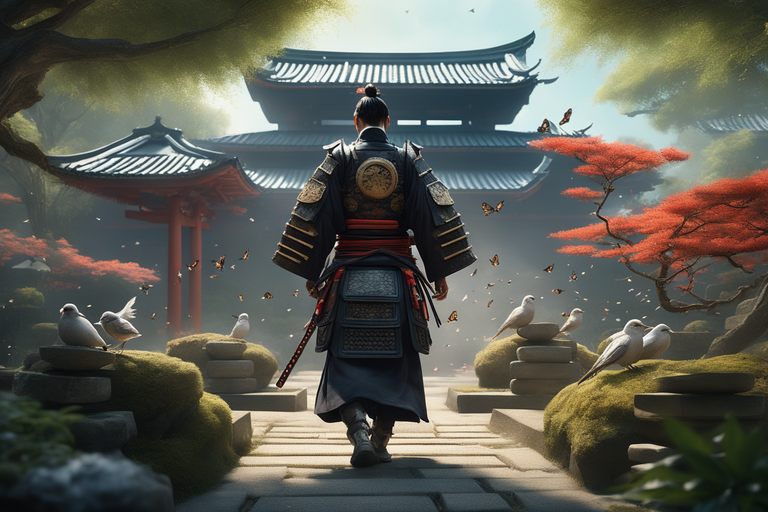

<html lang="pt-BR"></html>

<head>
        <meta charset="UTF-8">
        <meta name="viewport" content="width=device-width, initial-scale=1.0">
        <link rel="stylesheet" href="style.css">
        <link rel="preconnect" href="https://fonts.googleapis.com">
        <link rel="preconnect" href="https://fonts.gstatic.com" crossorigin>
        <link href="https://fonts.googleapis.com/css2?family=Protest+Guerrilla&display=swap" rel="stylesheet">
        <title>Caminhos Samurai</title>
</head>

<body>
        <main>
                <div class="passo ativo" id="passo-0">
                        
                        <p>O jovem samurai, Hiroshi, recebe a notícia de que seu clã está em perigo. Ele deve decidir:</p>
                        <button class="btn-proximo" data-proximo="1">Reunir seus companheiros para um ataque imediato.</button>
                        <button class="btn-proximo" data-proximo="2">Investigar os inimigos em segredo antes de agir.</button>
                </div>
                <div class="passo" id="passo-1">
                        
                        <p>Se Hiroshi escolher reunir os companheiros, eles se preparam para a batalha. Se optar pela investigação, ele descobre um traidor entre seus aliados. As escolhas são:</p>
                        <button class="btn-proximo" data-proximo="3">Lutar contra o clã inimigo.</button>
                        <button class="btn-proximo" data-proximo="4">Confrontar o traidor e desvendar suas intenções.</button>
                </div>
                <div class="passo" id="passo-2">
                        <p>Se Hiroshi lutou, ele enfrenta um duelista habilidoso. Se confrontou o traidor, ele descobre planos mais sombrios. Agora, ele deve decidir:</p>
                        <button class="btn-proximo" data-proximo="5">Usar sua habilidade em combate para vencer.</button>
                        <button class="btn-proximo" data-proximo="6">Propor uma aliança com o traidor, revelando a verdadeira ameaça.</button>
                </div>
                <div class="passo" id="passo-3">
                        <p>Finais</p>
                        <button class="btn-proximo" data-proximo="7">Hiroshi vence a batalha e se torna um herói, mas perde muitos amigos.</button> 
                        <button class="btn-proximo" data-proximo="8">Hiroshi une forças com o traidor e derrota uma ameaça maior, mas se torna um paria entre seu clã.</button>
                </div>
              
                
        </main>
        <script src="script.js"></script>
</body>

</html>